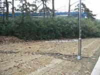
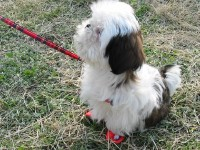
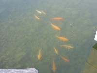

| Природа, погода и так далее |
|
|
| Снег |
|
Есть. Есть снег!!! Я на ВВП видела, в траве. Глеб, правда, так и не разглядел, но, честное слово, снег был! В двух местах. Наверное, целую тарелку набрать можно. С аэродрома. А ещё снег есть на заболоченных участках вдоль побережья, в самых глубоких и тёмных местах. :) |
| Растительность |
|
Ну что сказать? Папоротники у них полегли, полегли папоротники... Они не завяли, нет. И зеленые вполне. Лежат просто. :-| Кругом деревья, деревья, деревья... В основном - сосны. Поэтому довольно зелено. Там, конечно, есть ещё чему зеленеть - пихты там, ещё что-то незнакомое типа можжевельника... папоротники, опять же... и стояли бы у них лиственные деревья голыми, да ведь новый год же скоро! А потому КАЖДАЯ веточка обмотана гирляндой с мааааленькими лампочками, ночью стоИт вполне культурное дерево, тщательно "прорисованное". Кусты так тщательно не обводят, просто равномерно лампочки развешивают.  Это в жилых местах. А вдоль полей особо ценные, думаю, деревья аккуратно обмотаны соломой. КАЖДАЯ ветка. Солома перевязана верёвочками через каждые сантиметров пятнадцать. И стоит этакое... соломенное дерево. Да, чуть не забыла. На газонах-то тоже что-то хорошее посеяно, не дело ему замерзать... правильно! Тоже соломой его. А поскольку снега мало и на все газоны не хватит, чтобы солому прижимать аккуратненько вбиваем колышки и привязываем солому верёвочками... :) Я не удивлюсь, если они её потом собирают и повторно используют. :-/ Полей много, и, видимо, когда их освобождают, деревья пересаживают. В любом возрасте. Только палками их подстраховывают. На отдельностоящее дерево - от трех до пяти вертикальных палок, горизонтальные - по необходимости. Группы (могут быть и по сотне, а может и больше, не знаю) просто соединяют между собой. Тоже палками. Там уже не разберёшь, сколько... Возникает вопрос: где они (корейцы) берут столько палок?! Мы решили, что в России. Например, закупают лопаты, черенки для деревьев, а металл - в переплавку. :) Посмотрели на рисовые поля зимой. Там сейчас теплицы стоят. Внутри что-то зеленеет... Поля, конечно, не полностью под теплицами, всего процентов, думаю, двадцать. Да, вспомнила. Капуста декоративная так и растёт на улице, ничего ей не стало. |
| Животные |
|
Корейских собак мы видели, самых разных. Были и в машинах, и на поводке, и на мусорке толстенькая собачка в ошейничке. А в магазине сидела очень задумчивая и серьёзная собачка, поглядывавшая на нас крайне недоверчиво. :)  А ещё я нашла тут рядом с нами зоомагазин. Видела крольчат продающихся, комнатных. Маааленькие, хорошенькие! Один был особенно жирненький и рыжий. :) Цены от 5 КW за простого и до 15 КW за рыжего и красивого. :) Глеб сразу развернул планирование, как незаконно вывезти кролика в Россию. Точнее, двоих. Но почему-то обоих должна провозить я. :) Вот такой он "контрабандист". :) В специализированных магазинах продаётся огромное количество "тапочек" и "сапожек" любых фасонов и размеров, ессно, для собак. А также курточки и пальтишки, аналогично. Висят на вешалочках, размер указан. :) Видели бело- желтый комплект, размером примерно как на тойтерьера, лохматенький, на капюшоне то ли просто ушки, то ли "кормашки", куда родные просовывать, мы уж не уточняли... :)))) Вся эта одежда пользуюется огромным спросом: увидеть на улице домашнюю собаку раздетой уже начинает мне казаться неприличным. :) Так что подобных магазинчиков очень много, тем более что они частенько располагаются "в одном флаконе" с клиниками и... собачьими парикмахерскими. Ветеринарных клиник просто огромное количество: этого добра больше чем аптек или поликлиник для людей. :-О
Как ни странно, в национальностях собаки, видимо, разбираются, так как Глеб однажды довёл несчастную собачку до истерики: встретили мы этого молодого спаниельчика в лесу, в сопровождении девочки-хозяйки. Глеб вроде бы ничего и не делал - только посмотрел и посвистел немножко, но собаке этого хватило: идти дальше пёсик наотрез отказался, даже предлагал девочке срочно вернуться домой, к чему и приступил самостоятельно. И долго потом возмущался предательством хозяйки, вознамерившейся пронести его ценнейшую особу мимо этого подозрительного и ужасного типа (Глеба). Но когда пёсик был отнесён на безопасное расстояние, на его морде явственно читалась гордость за собственную беспримерную храбрость... :) Кошек на улице очень мало. Больше половины - с короткими или купированными хвостами. Все удивительно грязные. Я привыкла к чистым российским, а эти, видимо, и не умываются никогда. :-О Корейцы кошек недолюбливают, потому что те могут поцарапать (интересно, а их не смущает, что собака может укусить?). Потому про домашних кошек ничего не слышала и не знаю - скорее всего, содержание кошки - подвиг или сумасшествие, равнозначные содержанию тигра. ;)  Зато видела на улице кошку, подъедающую остатки кимчи - очень острой капусты, квашеной в перечной пасте. :-О Повтор такого же подвига, но попугаем, показывали по телевизору. :) Если вы где-нибудь на улице увидели озеро или пруд, то с огромной вероятностью внутри плавают золотисто-красные рыбки. Размеры - от примерно 10 сантиметров и до полуметра, крупнее пока не встречала. Люди их подкармливают всякими крошками, рыбачить никто не пытается. :) |
| Смена времён года |
|
Поскольку меняются времена года, постепенно меняется и картинка на главной странице (думаю, что вы это уже заметили). Старые, конечно, выбрасывать совсем не хочется, так что здесь - микроархив фотографий с главной страницы (уже из трёх наименований): Эх, удастся ли сделать последнюю, осеннюю версию?.. :-( |
| Погода |
|
Поскольку погода меняется постоянно, Глеб требует у меня изменить тот
текст, который тут был до этого (Тепло. Мы обулись в осеннее, а то
жарко. Куртки оставили эти, так как вечером довольно прохладно, а днём
я просто не застёгиваюсь. Сегодня пасмурно, а днём пошёл снег!!! Шёл он
минуты две, так что следов его мы потом не нашли. :) На улицах сухо.
Светает, видимо, очень рано - в 10 солнце было очень высоко, темнеет
нормально.), а постоянно отслеживать "что же у нас там на улице
делается" я не могу, то я сваливаю эту почётную обязанность на ФОБОС:
|


{kind=link}
{kind=link}
{kind=link}
{kind=link}
{kind=link}
{kind=link}
Снег | Растительность | Животные | Смена времён года | Погода | НА ГЛАВНУЮ